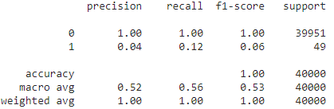

Naive Bayes is a classification model that is derived from the Bayes Theorem. It first calculates the probability of given class labels then finds the likelihood probability of each attribute of each class. Then, it inputs these values into Bayes formula and calculate the posterior probability. It does this for each class, deciding which one has the highest probability.
Model Training
The data was train-test splitted into an 80-20 fashion, in which we then imported the libraries from scikit learn, which included train_test split for model selection and GaussianNB.
import sklearn
from sklearn.model_selection import train_test_split
from sklearn.naive_bayes import GaussianNB
We train the model using .fit() After the training, we check our metric score by first importing the library to check:
from sklearn import metrics
Accuracy Results
Post training we will then check the metric accuracy score and the ROC AUC score:
metrics accuracy score = 0.99565
roc auc score = 0.5595849813981311
After checking the scores, we needed to illustrate how accurate our model was, which brings this heatmap:
Classification Report
Finally, here is our data classification report!
